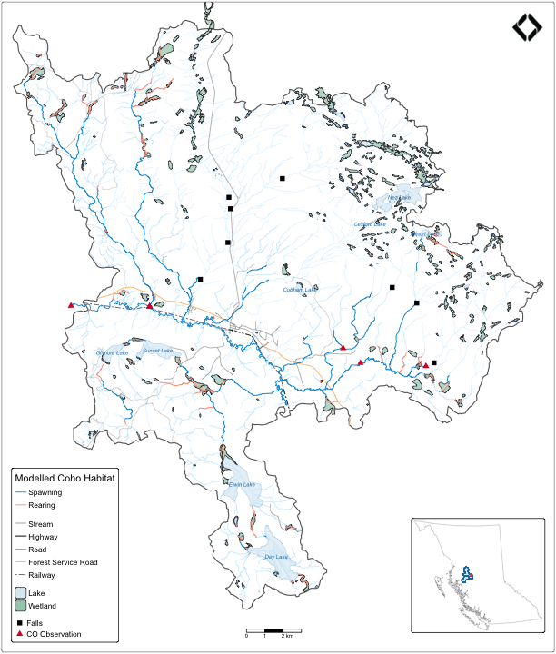

Network subtraction: query everything between two points on the same blue line key — upstream of the downstream boundary minus upstream of the upstream boundary. No spatial clipping needed.
Here we zoom into a subbasin of the Neexdzii Kwa (Upper Bulkley
River) in the traditional territory of the Wet’suwet’en, bounded by
Byman Creek (downstream) and Ailport Creek (upstream). We pull streams,
coho habitat, lakes, wetlands, crossings, fish observations, and falls
in a single frs_network() call. Roads, forest service
roads, and railway are fetched via spatial query against the subbasin
polygon.
Note that lakes and wetlands returned by frs_network()
can straddle watershed boundaries — they are matched by waterbody key on
the stream network, not clipped spatially. A future
frs_waterbody_clip() helper could handle this (see issue
#12).
library(fresh)
library(sf)
library(tmap)
sf_use_s2(FALSE)
conn <- frs_db_conn()
blk <- 360873822
drm_byman <- 208877 # just upstream of Byman Creek
drm_ailport <- 233564 # just upstream of Ailport Creek
# Subbasin polygon (downstream watershed minus upstream watershed)
aoi <- frs_watershed_at_measure(conn, blk, drm_byman, upstream_measure = drm_ailport)
# Network features between the two points
result <- frs_network(conn, blk, drm_byman, upstream_measure = drm_ailport,
tables = list(
streams = "whse_basemapping.fwa_stream_networks_sp",
co = list(
table = "bcfishpass.streams_co_vw",
cols = c("segmented_stream_id", "blue_line_key", "gnis_name",
"stream_order", "mapping_code", "rearing", "spawning",
"access", "geom"),
wscode_col = "wscode",
localcode_col = "localcode"
),
lakes = "whse_basemapping.fwa_lakes_poly",
wetlands = "whse_basemapping.fwa_wetlands_poly",
crossings = "bcfishpass.crossings",
fish_obs = "bcfishobs.fiss_fish_obsrvtn_events_vw",
falls = "bcfishpass.falls_vw"
)
)
# Roads, FSRs, railway — spatial query against AOI bbox, clip to subbasin
bb <- st_bbox(aoi)
env <- sprintf(
"ST_MakeEnvelope(%s, %s, %s, %s, 3005)",
bb["xmin"], bb["ymin"], bb["xmax"], bb["ymax"]
)
roads <- frs_db_query(conn, sprintf(
"SELECT transport_line_type_code, geom
FROM whse_basemapping.transport_line
WHERE transport_line_type_code IN
('RF','RH1','RH2','RA','RA1','RA2','RC1','RC2','RLO')
AND ST_Intersects(geom, %s)", env
))
roads <- st_collection_extract(st_intersection(roads, aoi), "LINESTRING")
# Split highways from other roads for distinct styling
highways <- roads[roads$transport_line_type_code %in% c("RF", "RH1", "RH2"), ]
roads_other <- roads[!roads$transport_line_type_code %in% c("RF", "RH1", "RH2"), ]
fsr <- frs_db_query(conn, sprintf(
"SELECT road_section_name, geom
FROM whse_forest_tenure.ften_road_section_lines_svw
WHERE life_cycle_status_code = 'ACTIVE'
AND file_type_description = 'Forest Service Road'
AND ST_Intersects(geom, %s)", env
))
fsr <- st_collection_extract(st_intersection(fsr, aoi), "LINESTRING")
railway <- frs_db_query(conn, sprintf(
"SELECT track_name, geom
FROM whse_basemapping.gba_railway_tracks_sp
WHERE ST_Intersects(geom, %s)", env
))
if (nrow(railway) > 0) {
railway <- st_collection_extract(st_intersection(railway, aoi), "LINESTRING")
}
# Keymap data: BC outline + Bulkley/Morice watershed groups
bc <- frs_db_query(conn,
"SELECT ST_Simplify(geom, 5000) as geom FROM whse_basemapping.fwa_bcboundary"
)
wsg <- frs_db_query(conn,
"SELECT watershed_group_code, geom
FROM whse_basemapping.fwa_watershed_groups_poly
WHERE watershed_group_code IN ('BULK', 'MORR')"
)
# Cache for fast rebuilds
saveRDS(
list(aoi = aoi, result = result, roads_other = roads_other,
highways = highways, fsr = fsr, railway = railway, bc = bc, wsg = wsg),
"../inst/extdata/subbasin_data.rds"
)
library(fresh)
library(sf)
#> Linking to GEOS 3.13.0, GDAL 3.8.5, PROJ 9.5.1; sf_use_s2() is TRUE
library(tmap)
sf_use_s2(FALSE)
#> Spherical geometry (s2) switched off
d <- readRDS(system.file("extdata", "subbasin_data.rds", package = "fresh"))
aoi <- d$aoi; result <- d$result; roads_other <- d$roads_other
highways <- d$highways; fsr <- d$fsr; railway <- d$railway
bc <- d$bc; wsg <- d$wsg2167 stream segments, 1286 coho habitat segments, 89 lakes, 323 wetlands, crossings, 9 coho observations (161 total fish observations), and 8 falls — all from network subtraction, no spatial clip. 184 road segments, 19 forest service road segments, and 10 railway segments clipped to the subbasin.
reg <- gq::gq_reg_main()
# Simplify coho habitat to spawning / rearing / access
co <- result$co
co$habitat_type <- ifelse(co$spawning > 0, "Spawning",
ifelse(co$rearing > 0, "Rearing", NA_character_))
co$habitat_type <- factor(co$habitat_type, levels = c("Spawning", "Rearing"))
logo_path <- system.file("logo", "nge_icon_200.png", package = "gq")
tmap_mode("plot")
#> ℹ tmap modes "plot" - "view"
#> ℹ toggle with `tmap::ttm()`
# Keymap inset
keymap <- tm_shape(bc) +
tm_borders(col = "grey60", lwd = 0.5) +
tm_shape(wsg) +
tm_polygons(fill = "#a9e0ff", fill_alpha = 0.5, col = "#1f78b4", lwd = 0.5) +
tm_shape(aoi) +
tm_polygons(fill = "#ef4545", col = "#ef4545", lwd = 0.3) +
tm_layout(
frame = TRUE,
bg.color = "white",
inner.margins = c(0.02, 0.02, 0.02, 0.02)
)
# Expand bbox slightly to fill more vertical space
bb <- st_bbox(aoi)
y_pad <- (bb["ymax"] - bb["ymin"]) * 0.03
bb["ymin"] <- bb["ymin"] - y_pad
bb["ymax"] <- bb["ymax"] + y_pad
bb_box <- st_as_sfc(bb, crs = st_crs(aoi))
# Main map — draw order: wetlands, streams, lakes ON TOP of streams, then lines/points
m <- tm_shape(bb_box) +
tm_borders(lwd = 0, col = NA) +
tm_shape(aoi) +
tm_borders(col = "grey40", lwd = 1.5) +
tm_shape(result$wetlands) +
do.call(tm_polygons, gq::gq_tmap_style(reg$layers$wetland)) +
tm_shape(result$streams) +
tm_lines(col = "#a9e0ff", lwd = 0.3) +
tm_shape(result$lakes) +
do.call(tm_polygons, gq::gq_tmap_style(reg$layers$lake))
# Lake labels
lakes_named <- result$lakes[!is.na(result$lakes$gnis_name_1) &
result$lakes$gnis_name_1 != "", ]
if (nrow(lakes_named) > 0) {
m <- m + tm_shape(lakes_named) +
tm_text("gnis_name_1", size = 0.5, col = "#1f78b4",
fontface = "italic", shadow = TRUE)
}
#>
#> ── tmap v3 code detected ───────────────────────────────────────────────────────
#> [v3->v4] `tm_text()`: migrate the layer options 'shadow' to 'options =
#> opt_tm_text(<HERE>)'
# Transport — FSRs first (thinnest), then roads, highways on top
if (nrow(fsr) > 0) {
m <- m + tm_shape(fsr) + tm_lines(col = "#787878", lwd = 0.3)
}
if (nrow(roads_other) > 0) {
m <- m + tm_shape(roads_other) + tm_lines(col = "#484848", lwd = 0.5)
}
if (nrow(highways) > 0) {
m <- m + tm_shape(highways) + tm_lines(col = "#ffc485", lwd = 1.3)
}
if (nrow(railway) > 0) {
m <- m + tm_shape(railway) + tm_lines(col = "black", lwd = 0.8, lty = "twodash")
}
# Coho habitat — access segments as stream-colored, spawning/rearing classified
co_access <- co[is.na(co$habitat_type), ]
co_habitat <- co[!is.na(co$habitat_type), ]
if (nrow(co_access) > 0) {
m <- m + tm_shape(co_access) + tm_lines(col = "#a9e0ff", lwd = 0.3)
}
m <- m +
tm_shape(co_habitat) +
tm_lines(
col = "habitat_type",
col.scale = tm_scale_categorical(
levels = c("Spawning", "Rearing"),
values = c("#129bdb", "#ff9f85")
),
col.legend = tm_legend(title = "Modelled Coho Habitat"),
lwd = 1.2
)
# Points
if (nrow(result$falls) > 0) {
m <- m + tm_shape(result$falls) +
tm_symbols(shape = 15, fill = "black", size = 0.5)
}
fish_obs_co <- result$fish_obs[result$fish_obs$species_code == "CO", ]
if (nrow(fish_obs_co) > 0) {
m <- m + tm_shape(fish_obs_co) +
tm_symbols(shape = 17, fill = "#db1e2a", size = 0.5)
}
# Manual legends (tmap v4 syntax)
m <- m +
tm_add_legend(
type = "lines",
labels = c("Stream", "Highway", "Road", "Forest Service Road", "Railway"),
fill = c("#a9e0ff", "#ffc485", "#484848", "#787878", "black"),
lwd = c(0.5, 1.3, 0.5, 0.3, 0.8),
lty = c("solid", "solid", "solid", "solid", "twodash")
) +
tm_add_legend(
type = "polygons",
labels = c("Lake", "Wetland"),
fill = c("#dcecf4", "#a3cdb9")
) +
tm_add_legend(
type = "symbols",
labels = c("Falls", "CO Observation"),
shape = c(15, 17),
fill = c("black", "#db1e2a"),
size = c(0.5, 0.5)
)
# Layout: tight margins, elements close to frame edges
m <- m +
tm_scalebar(
breaks = c(0, 1, 2, 3),
text.size = 0.5,
position = c("center", "bottom"),
margins = c(0, 0, 0, 0)
) +
tm_logo(logo_path, position = c("right", "top"), height = 2.5,
margins = c(0, 0, 0, 0)) +
tm_layout(
frame = TRUE,
frame.lwd = 0.5,
asp = 0,
legend.position = c("left", "bottom"),
inner.margins = c(0.04, 0.001, 0.001, 0.001),
outer.margins = c(0.003, 0.003, 0.003, 0.003),
meta.margins = 0
)
# Print with keymap inset — tight to bottom-right corner
print(m)
print(keymap, vp = grid::viewport(x = 0.86, y = 0.12, width = 0.25, height = 0.22))